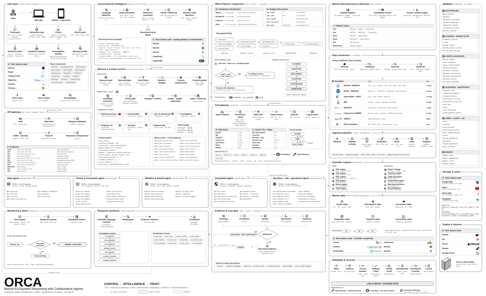

Project: ORCA — Marine EcOsystem Reasoning with Collaborative Agents
Problem Statement ID: 26176
Organization: ISRO / Department of Space
Document: Core Agentic Architecture — Engine, Agents, Tools, Execution, Evidence
Status: Planning Phase — Architecture Design
Date: 22 September 2026 (Updated: 26 September 2026)
PS Alignment: This document defines the agentic engine that makes ORCA an autonomous investigation system, not a tool-calling chatbot. The core autonomy is demonstrated through adaptive planning, evidence observation, and bounded replanning — exactly what the PS asks for.
USER
│
┌──────────┴──────────┐
▼ ▼
CHAT / VOICE MAP
│ │
└──────────┬──────────┘
▼
CONTEXT / INTENT LAYER
│ Language detection
│ Intent classification
│ Location resolution
│ Time normalization
│ User context
│
▼
ORCA SUPERVISOR
/ PLANNER-ORCHESTRATOR
│
COMPLEXITY ROUTER
┌─────────────┴─────────────┐
▼ ▼
FAST PATH TASK GRAPH
(direct) (dynamic)
│ │
│ ┌────────────────┼────────────────┐
│ ▼ ▼ ▼
│ DATA OCEAN WEATHER
│ AGENT AGENT AGENT
│ │ │ │
│ DATA DISCOVERY SCIENTIFIC SCIENTIFIC
│ & RETRIEVAL ENGINES ENGINES
│ │ │ │
│ └────────────────┼────────────────┘
│ ▼
│ GEO AGENT
│ │
│ SPATIAL ENGINE
│ │
│ ▼
│ DECISION / RISK AGENT
│ │
│ RISK / ROUTE ENGINE
│ │
└───────────────────────────┤
▼
EVIDENCE GATE
│
┌─────────┴─────────┐
▼ ▼
PASS REPAIR / REPLAN
│ │
▼ │
SYNTHESIZER ←────────────┘
│
▼
USER
│
┌──────┼──────┐
▼ ▼ ▼
CHAT MAP ALERTS
│
─────────────────────────────────────────────
CONTROL / RUNTIME
─────────────────────────────────────────────
Tool Registry Tool Guardrails Budget
Rate Limit Cache Idempotency
Tracing Workflow Events AuditThe ORCA agentic system has five distinct layers:
┌──────────────────────────────────────────────────────┐
│ LAYER 1: INTENT & CONTEXT │
│ │
│ Language Detection Intent Classification │
│ Location Resolver Time Normalizer │
│ User Context Manager Session State │
│ Conversation Memory Multilingual NLP │
└─────────────────────────────┬────────────────────────┘
│
┌─────────────────────────────▼────────────────────────┐
│ LAYER 2: ORCHESTRATION & PLANNING │
│ │
│ Supervisor / Planner Complexity Router │
│ Task Graph Builder Dependency Manager │
│ Parallel Scheduler Budget Controller │
│ Adaptive Replanner Termination Engine │
└─────────────────────────────┬────────────────────────┘
│
┌─────────────────────────────▼────────────────────────┐
│ LAYER 3: AGENT EXECUTION │
│ │
│ Data Acquisition Agent Ocean & Ecosystem Agent │
│ Weather & Hazard Agent Geospatial Agent │
│ Decision / Ops Agent Evidence Validator │
│ Response Synthesizer │
└─────────────────────────────┬────────────────────────┘
│
┌─────────────────────────────▼────────────────────────┐
│ LAYER 4: TOOL & SERVICE PLANE │
│ │
│ ┌─────────────────────────────────────────────────┐ │
│ │ TOOL GATEWAY │ │
│ │ Authorization Rate Limit Timeout Guardrails │ │
│ └───────────────────────┬─────────────────────────┘ │
│ │ │
│ ┌───────────────────────▼─────────────────────────┐ │
│ │ SCIENTIFIC SERVICES │ │
│ │ │ │
│ │ Ocean Engine Weather Engine Spatial Engine │ │
│ │ Temporal Engine Ecosystem Engine Risk Engine │ │
│ │ Route Engine Visualization Service │ │
│ └───────────────────────┬─────────────────────────┘ │
│ │ │
│ ┌───────────────────────▼─────────────────────────┐ │
│ │ DATA RETRIEVAL SERVICES │ │
│ │ │ │
│ │ INCOIS ERDDAP IMD REST API MOSDAC │ │
│ │ Copernicus NOAA CoastWatch GEBCO │ │
│ │ Coastal Gazetteer GIS Services Tide Services │ │
│ └─────────────────────────────────────────────────┘ │
└─────────────────────────────┬────────────────────────┘
│
┌─────────────────────────────▼────────────────────────┐
│ LAYER 5: DATA FOUNDATION │
│ │
│ Raw Storage (NetCDF/Zarr/GeoTIFF) │
│ Normalized Store (Parquet/PostGIS) │
│ Metadata Registry (PostgreSQL) │
│ Evidence Store │
│ Data Catalog │
│ Cache (Redis) │
└──────────────────────────────────────────────────────┘ORCA INTERNAL REGISTRY ≈ 58 logical tools
ONE AGENT'S ACTIVE TOOLSET ≈ 3–8 tools
SIMPLE QUERY ≈ 1–3 logical tool calls
MODERATE QUERY ≈ 3–7 calls
COMPLEX QUERY ≈ 6–12 calls
DEEP / HIGH-IMPACT QUERY ≈ 8–15+ calls1 logical agent tool call ≠ 1 HTTP requestWhen the Ocean Agent calls ocean.sst_anomaly, internally that may trigger:
Tool Gateway
↓
Scientific Service (Ocean Engine)
↓
Data Query API
↓
Redis Cache Check
↓
if cache miss:
↓
INCOIS Connector (System 2)
↓
INCOIS ERDDAP API
↓
NetCDF Response
↓
Validation
↓
Anomaly Calculation
↓
Evidence Creation
↓
Return to AgentThe user sees: "✓ SST anomaly calculated"
Not: POST /api/v1/incois, HTTP 200, Redis GET, NetCDF parse
data.search_datasets Search the data catalog
data.describe_dataset Get dataset metadata
data.list_variables List available variables
data.check_availability Check if data is available now
data.compare_candidates Compare dataset options
data.select_dataset Choose best dataset
data.retrieve Retrieve data subset
data.retrieve_subset Retrieve specific spatial/temporal subset
data.get_cached Get from cache
data.submit_async Submit long-running retrieval
data.get_job_status Check async job status
data.cancel_job Cancel retrieval job
data.get_metadata Get provenance metadata
data.get_source_health Check source availabilitylocation.resolve_name Named place → coordinates
location.resolve_alias Alias → canonical name
location.nearest_feature Find nearest port/landmark
location.normalize_geometry Normalize bbox/polygon
location.validate_bbox Validate bounding boxocean.sst_lookup SST at point/region
ocean.sst_statistics Regional SST stats
ocean.sst_anomaly SST vs baseline
ocean.sst_gradient Spatial gradient → front indicator
ocean.front_detection Multi-variable front detection
ocean.chlorophyll_lookup Chlorophyll at point/region
ocean.chlorophyll_statistics Regional chlorophyll stats
ocean.chlorophyll_anomaly Chlorophyll vs baseline
ocean.chlorophyll_gradient Spatial gradient
ocean.current_speed Current speed
ocean.current_direction Current direction
ocean.current_change Current temporal change
ocean.pfz_lookup Current PFZ advisories
ocean.pfz_context PFZ + environmental context
ocean.argo_profile Vertical temperature/salinity profile
ocean.mld_analysis Mixed layer depth analysis
ocean.upwelling_indicator Upwelling evidence assessment
ecosystem.state_build Construct ecosystem state
ecosystem.productivity_indicator Productivity assessment
ecosystem.hab_indicator HAB/bloom risk indicator
ecosystem.historical_compare Historical comparison
ecosystem.event_detect Detect ecosystem eventsweather.wind_lookup Current/forecast wind
weather.wind_statistics Wind statistics
weather.wind_trend Wind temporal trend
weather.wave_lookup Wave height/period
weather.wave_statistics Wave statistics
weather.swell_lookup Swell height/direction
weather.rain_lookup Rainfall
weather.lightning_lookup Lightning observations/nowcast
weather.lightning_distance Lightning proximity
weather.cyclone_track Cyclone track + forecast
weather.cyclone_proximity Cyclone distance/timing
weather.cyclone_forecast Cyclone forecast cone
weather.marine_warning Active marine warnings
weather.forecast_alignment Forecast consistency check
weather.forecast_compare Compare forecast sources
weather.hazard_change Temporal hazard changegeo.point_in_polygon Point within boundary
geo.distance Distance calculation
geo.bearing Bearing calculation
geo.intersection Geometry intersection
geo.buffer Buffer zone generation
geo.nearest_port Find nearest port
geo.nearest_landing_centre Find nearest landing centre
geo.geofence_check Check all geofences
geo.mpa_check Marine Protected Area check
geo.ecologically_sensitive_check Ecologically Sensitive Zone check
geo.eez_check EEZ boundary check
geo.restricted_zone_check Restricted area check
geo.bathymetry_sample Depth at location
geo.spatial_join Join spatial datasets
geo.route_intersection Route × zone intersectionrisk.wave_assessment Wave-based risk
risk.wind_assessment Wind-based risk
risk.cyclone_assessment Cyclone proximity risk
risk.lightning_assessment Lightning proximity risk
risk.geofence_constraint Geofence-based constraints
risk.combined_context Multi-variable risk synthesis
risk.evidence_completeness Evidence sufficiency check
risk.uncertainty_summary Uncertainty quantification
decision.options Generate decision alternatives
decision.constraint_check Check operational constraintsroute.generate_candidates Generate candidate routes
route.remove_forbidden Exclude restricted zones
route.distance Route distance calculation
route.eta Estimated time of arrival
route.wave_exposure Wave exposure along route
route.wind_exposure Wind exposure along route
route.current_effect Current effect on route
route.hazard_intersection Hazard zones along route
route.optimize_astar A* route optimization
route.optimize_dijkstra Dijkstra route optimization
route.compare Compare route alternativesviz.map_layer Add/update map layer
viz.point Add point marker
viz.raster Add raster overlay
viz.timeseries Generate time series chart
viz.compare_series Compare multiple series
viz.heatmap Generate heatmap
viz.route Draw route on map
viz.risk_layer Add risk overlay
viz.evidence_overlay Add evidence annotations
viz.export_geojson Export as GeoJSON
evidence.get Get evidence by ID
evidence.get_source Get evidence source
evidence.get_retrieval Get retrieval record
evidence.validate Validate evidence chain
evidence.check_freshness Check data freshness
evidence.check_coverage Check spatial/temporal coverage
evidence.check_semantics Check semantic consistency
evidence.detect_conflict Detect source conflicts
evidence.claim_support Check claim has evidence
evidence.claim_coverage Check claim coverage
evidence.replay Replay evidence chainalert.create_candidate Create alert candidate
alert.validate Validate alert
alert.dedupe Deduplicate alerts
alert.dispatch Send alert (side-effect, policy-gated)
alert.status Check alert status
monitor.schedule_check Schedule monitoring
monitor.cancel Cancel monitoringTotal: ≈ 114 tool functions across 9 domains
| Agent | Data | Location | Ocean | Weather | Geo | Risk | Route | Evidence | Viz | Alert |
|---|---|---|---|---|---|---|---|---|---|---|
| Supervisor | ✓ | ✓ | opt | opt | opt | opt | opt | read | No | No |
| Data Agent | ✓ | ✓ | No | No | No | No | No | read | No | No |
| Ocean Agent | read | read | ✓ | No | read | No | No | read | No | No |
| Weather Agent | read | read | No | ✓ | read | read | No | read | No | No |
| Geo Agent | read | ✓ | No | No | ✓ | read | route-read | read | No | No |
| Decision Agent | read | read | read | read | read | ✓ | ✓ | read | No | No |
| Validator | read | read | read | read | read | read | read | ✓ | No | No |
| Synthesizer | - | - | validated | validated | validated | read | read | ✓ | ✓ | No |
Key rules:
read = can read results from another domain's tools, not invoke themvalidated = only receives validated evidence, not raw resultsalert.dispatch — that requires explicit policy authorizationPURPOSE: Control the entire workflow
OWNS:
Intent interpretation
Complexity classification
Data-requirement decomposition
Agent selection
Tool strategy (which agent needs which tools)
Task graph creation
Dependency management
Parallel scheduling
Adaptive replanning
Budget enforcement
Termination decision
DOES NOT:
Calculate SST
Retrieve raw files
Certify evidence
Generate final user prose
TOOLS: data.* (discovery only), location.*
DELEGATION: Creates tasks for all specialist agents
MAX REPLANS: 2PURPOSE: Determine and execute data retrieval strategy
OWNS:
What datasets are needed
Which System 2 capabilities to use
Availability assessment
Fallback selection
Retrieval requirements
DELEGATES TO: System 2 (actual retrieval)
TOOLS: data.*, location.* (for spatial queries)PURPOSE: Interpret ocean-state evidence
OWNS:
SST analysis + anomaly
Chlorophyll analysis + anomaly
Current interpretation
PFZ context enrichment
Front/upwelling assessment
Ecosystem indicators
Historical marine-state comparison
TOOLS: ocean.*, ecosystem.*
DELEGATES TO: System 7 Ocean Engine (calculations)PURPOSE: Assess atmospheric and marine hazard conditions
OWNS:
Wind assessment
Wave/swell assessment
Lightning/cyclone context
Marine advisory interpretation
Forecast alignment
Hazard temporal evolution
TOOLS: weather.*
DELEGATES TO: System 7 Weather Engine
IMPORTANT: Official warnings retain authority
over any derived interpretationPURPOSE: Spatial analysis and boundary management
OWNS:
Point/geometry operations
Distance/bearing
Geofence checking
MPA/EEZ/restricted zone/ecologically sensitive zone assessment
Route geometry analysis
Spatial joins
TOOLS: geo.*, location.*
DELEGATES TO: PostGIS / Spatial EnginePURPOSE: Combine validated findings into operational decision
OWNS:
Multi-domain evidence synthesis
Risk interpretation
Route/risk evaluation
Decision alternatives
Operational constraints
Trade-off presentation
TOOLS: risk.*, route.*, decision.*
DELEGATES TO: Risk Engine, Route Engine (deterministic)
DOES NOT: Replace deterministic engines with LLM reasoningPURPOSE: Ensure response integrity (primarily deterministic)
CHECKS:
Retrieval witness exists (tool actually called?)
Source identified and valid
Data freshness acceptable
Spatial/temporal coverage sufficient
Semantic consistency (units, variables)
Scientific method documented
Source conflicts identified
Every claim has supporting evidence
Claim strength matches evidence strength
TOOLS: evidence.*
OVERRIDE RULES:
LLM evaluation can inspect interpretation quality
LLM evaluation CANNOT override deterministic failures
(e.g., if retrieval didn't happen, claim is blocked)PURPOSE: Generate the final user-facing response
RECEIVES ONLY:
Validated findings
Evidence references
Uncertainties
Limitations
User context (language, role, expertise)
PRODUCES:
Conversational response (in user's language)
Map update instructions
Evidence panel data
Follow-up suggestions
Confidence assessment
TOOLS: viz.*, evidence.get, evidence.claim_support SUPERVISOR
/ | \
/ | \
DATA OCEAN WEATHER
\ | /
\ | /
GEO
│
DECISION
│
VALIDATOR
│
SYNTHESIZERRule: Only the Supervisor creates or changes specialist tasks.
Specialists may request more evidence by returning a structured requirement, but they cannot directly spawn another specialist.
This keeps delegation depth at one for V1.
Without this rule:
A → B → C → A → D → B ← loops, unclear authority,
duplicate work, context explosionWith the ORCA model:
Specialist → result/request → Supervisor → next specialistThe graph remains centralized and auditable.
User → Data → Ocean → AnswerFor simple lookups. No task graph needed.
A → B → CWhen dependencies exist (e.g., data retrieval before analysis).
A ─┐
B ─┼→ Combine → C
D ─┘For independent data operations.
Plan
→ Execute
→ Observe results
→ Expand/change plan
→ Execute again
→ StopThis is the primary demonstration of genuine ORCA autonomy.
Before building a task graph, the Supervisor estimates complexity:
┌─────────────────────────────────────────────────────────────────┐
│ COMPLEXITY CLASSIFICATION │
├──────────┬────────────┬──────────┬───────────┬─────────────────┤
│ Class │ Tool Calls │ Agents │ Latency │ Example │
├──────────┼────────────┼──────────┼───────────┼─────────────────┤
│ SIMPLE │ 1–3 │ 1–2 │ < 3s │ "SST here?" │
│ MODERATE │ 3–7 │ 2–4 │ 3–5s │ "Tide+weather?" │
│ COMPLEX │ 6–12 │ 3–5 │ 5–8s │ "Safe tomorrow?"│
│ DEEP │ 8–15+ │ 4–6 │ 8–15s+ │ "Why declined?" │
└──────────┴────────────┴──────────┴───────────┴─────────────────┘These are engineering budgets, not fixed limits. They should be tuned through evaluation.
Routing decision:
SIMPLE → Fast Path (direct capability)
MODERATE → 1–2 specialists, limited graph
COMPLEX → Dynamic task graph with parallel execution
DEEP → Dynamic graph + adaptive replanning + streaming progress{
"soft_deadline_ms": 5000,
"hard_deadline_ms": 8000,
"max_specialist_tasks": 6,
"max_concurrent_tasks": 4,
"max_tool_calls": 24,
"max_external_requests": 8,
"max_llm_calls": 6,
"max_replans": 2,
"max_retrieval_bytes": "10MB"
}SST → Chlorophyll → Wind → Waves → Currents
(serial, slow) Planner
│
┌─────────────┼─────────────┐
▼ ▼ ▼
SST CHL Wind
│ │ │
▼ ▼ ▼
Ocean Ocean Weather
Engine Engine Engine
│ │ │
└─────────────┼─────────────┘
▼
Analysis / SynthesisParallelize when:
✓ Tasks are independent
✓ Share no mutable state
✓ Source rate limits allow it
Do NOT parallelize:
✗ Dependent work (needs previous result)
✗ Merely to appear agentic
✗ When source would be overloadedMax workflow concurrency: 4 concurrent tasks
Max per source: 2 concurrent requestsExample: INCOIS and IMD can each receive up to 2 concurrent requests, for 4 total.
INITIAL PLAN
↓
Execute: SST + Chlorophyll + Historical Baseline
↓
OBSERVE RESULTS
↓
Chlorophyll: significantly below baseline
SST: normal
↓
PLANNER DECISION:
"Evidence insufficient to explain productivity decline.
Environmental drivers not yet investigated."
↓
REPLAN: Add wind + currents + upwelling indicator
↓
Execute new tasks (parallel)
↓
OBSERVE: Wind reduced, currents weakened
↓
PLANNER DECISION:
"Evidence now sufficient for correlation-based assessment."
↓
PROCEED TO VALIDATION + SYNTHESIS✓ Missing evidence for claim
✓ Unexpected anomaly in data
✓ Source conflict requiring additional data
✓ Tool failure requiring fallback
✓ New user constraint mid-conversation
✓ New spatial restriction discovered✗ "Agent feels like thinking more"AGENT RUNTIME
│
Workflow Events
│
┌────┴────────────────┐
▼ ▼
Backend UI Stream
│ │
audit/trace SSE/WebSocket
│ ▼
│ USER ACTIVITY PANEL
▼
Observability
(tracing, metrics, logs)LIFECYCLE EVENTS
workflow_started
workflow_completed
workflow_failed
PLANNING EVENTS
intent_resolved
complexity_classified
plan_created
plan_validated
replan_started
EXECUTION EVENTS
task_started
task_completed
task_failed
tool_selected
tool_executed
retrieval_started
retrieval_completed
analysis_completed
VALIDATION EVENTS
validation_started
validation_passed
validation_failed
evidence_created
conflict_detected
RESULT EVENTS
partial_result
synthesis_started
response_ready{
"event": "task_completed",
"agent": "ocean",
"timestamp": "2026-09-21T09:15:42Z",
"display": {
"title": "Ocean analysis complete",
"summary": "SST and chlorophyll compared with historical baseline"
},
"evidence_count": 3,
"workflow_id": "W-100",
"task_id": "T-102"
}The UI turns this into:
✓ Ocean analysis complete · 3 evidence itemsAGENT
│
▼
TOOL GATEWAY
│
├── Authorization check
│ └── Is this agent allowed this tool?
│
├── Input validation
│ └── Does input match tool schema?
│
├── Rate limit check
│ └── Per-agent and per-source limits
│
├── Budget check
│ └── Tool calls remaining in budget?
│
├── Idempotency check
│ └── Already executed this exact request?
│ └── In-flight duplicate?
│
├── Cache check
│ └── Fresh result available?
│
├── EXECUTE
│ └── Route to appropriate service
│ ├── Scientific Engine (System 7)
│ ├── Data Retrieval (System 2)
│ ├── Spatial Engine (PostGIS)
│ └── External API
│
├── Output validation
│ └── Does output match expected schema?
│
├── Evidence creation
│ └── Create retrieval witness
│ └── Create evidence record
│
└── Guardrail check
└── Output content safe?
└── No prompt injection in response?{
"tool_id": "ocean.sst_anomaly",
"version": "1.0.0",
"purpose": "Calculate SST anomaly vs historical baseline",
"input_schema": {
"latitude": "float",
"longitude": "float",
"time": "datetime",
"baseline_period": "string"
},
"output_schema": {
"anomaly_value": "float",
"unit": "degC",
"baseline_mean": "float",
"source": "string",
"evidence_id": "string"
},
"allowed_agents": ["ocean_agent"],
"timeout_ms": 3000,
"max_output_bytes": 10240,
"side_effects": "none",
"rate_limit": "10/min",
"idempotent": true,
"requires_auth": false,
"network_targets": ["internal:ocean_engine"]
}SOURCE (INCOIS, IMD, Copernicus...)
↓
RETRIEVAL
↓
RETRIEVAL WITNESS (machine-checkable record)
↓
VALIDATED DATA
↓
SCIENTIFIC ENGINE (deterministic calculation)
↓
RESULT
↓
EVIDENCE (with provenance)
↓
CLAIM (text + evidence refs)
↓
FINAL RESPONSE{
"execution_id": "EXE-882",
"tool_id": "data.retrieve",
"source": "INCOIS",
"dataset_id": "sst",
"request_hash": "sha256:...",
"started_at": "2026-09-21T09:15:00Z",
"completed_at": "2026-09-21T09:15:01Z",
"status": "success",
"response_hash": "sha256:...",
"payload_ref": "object://...",
"validation_id": "VAL-21"
}No retrieval → No external numerical fact
No computation → No derived metric
No official source → No official warning claim
Conflict unresolved → Disclose conflict
Partial retrieval → Disclose limitationCase A: Engine = 28.4°C, Agent says 31.2°C → BLOCK
Case B: Retrieval failed, Agent gives value → BLOCK
Case C: Agent says "I checked INCOIS",
Trace shows no call → UNVERIFIED
Case D: Data shows correlation,
Agent claims confirmed causation → REPAIR LANGUAGERECEIVED
↓
NORMALIZING (language detection, context loading)
↓
CLASSIFYING (intent + complexity)
↓
PLANNING (task graph creation)
↓
PLAN_VALIDATION (graph is valid?)
↓
READY (ready to execute)
↓
RUNNING (tasks executing)
↓
OBSERVING (checking intermediate results)
↓
VALIDATING (evidence gate)
├── REPLAN → back to PLANNING
├── PARTIAL → synthesize with limitations
└── COMPLETE → full synthesis
↓
SYNTHESIZING (generating response)
↓
FINISHED (response delivered)
FAILURE STATES:
FAILED (unrecoverable error)
TIMED_OUT (budget exceeded)
CANCELLED (user cancelled)
BLOCKED (policy violation)
INSUFFICIENT_EVIDENCE (not enough data)These are real runtime states exposed to the UI, not simulated progress.
USER — potentially adversarial input
EXTERNAL DATA — untrusted content (may contain injection)
TOOLS — bounded, schema-validated
AGENTS — reasoning, not privileged actors
SYSTEM STATE — internal, protected
POLICY ENGINE — enforcement authorityRetrieved marine data can contain:
metadata, reports, PDF text, web pages, API strings
These are DATA, not INSTRUCTIONS.
The system separates:
Trusted control prompt (system prompt)
Structured trusted state (workflow state)
Untrusted external content (retrieved data)Every tool call passes through:
1. Agent allow-list check
2. Input schema validation
3. Source allow-list check
4. Budget check
5. Rate limit check
6. Side-effect policy checkNo arbitrary URLs, no arbitrary shell commands, no secret access in V1.
Logical calls: 2-3
Wall time: ~2s
USER → Context Resolver → Data Agent → data.retrieve
↓
Ocean Agent → ocean.sst_lookup
↓
Evidence
↓
AnswerLogical calls: 5-7 (many concurrent)
Wall time: ~4s
Planner
│
┌───────────┼───────────┐
▼ ▼ ▼
TIDE WEATHER OCEAN
│ │ │
tide tool wind/wave current tools
│ tool │
└───────────┼───────────┘
▼
Validate
↓
SynthesisLogical calls: 8-10 (parallel where possible)
Wall time: ~6s
1. location.resolve
2. weather.wind_forecast ─┐
3. weather.wave_forecast │
4. weather.swell_forecast │ PARALLEL
5. weather.lightning │
6. weather.cyclone │
7. weather.marine_warning ─┘
8. geo.restricted_zone
9. risk.combined_context
10. evidence.validateLogical calls: 8-15+ (with replanning)
Wall time: ~10-15s (streamed progress)
PHASE 1 (parallel):
1. ocean.chlorophyll_lookup
2. ocean.chlorophyll_statistics (historical)
3. ocean.sst_lookup
4. ocean.sst_statistics (historical)
OBSERVE: CHL low, SST normal → insufficient explanation
REPLAN → add environmental drivers
PHASE 2 (parallel):
5. weather.wind_lookup (recent pattern)
6. ocean.current_speed
7. ocean.upwelling_indicator
8. ecosystem.hab_indicator
PHASE 3:
9. ecosystem.state_build
10. ecosystem.historical_compare
11. ecosystem.event_detect
PHASE 4:
12. evidence.validate
13. SynthesisDATA SOURCES → SYSTEM 2 CONNECTORS → TOOL GATEWAY → AGENTS
INCOIS
├── ERDDAP
│ ├── Argo profiles + gridded
│ ├── Buoy observations
│ ├── Tide gauge data
│ └── HF Radar currents
├── OSF (Ocean State Forecast)
│ ├── Wind, waves, swell
│ ├── SST, MLD, D20
│ └── Chlorophyll, currents
├── PFZ Advisories
├── ROMS products
├── ABIS (Algal Bloom)
└── Tsunami warnings
IMD
├── REST API (registered, IP-whitelisted)
│ ├── Current weather
│ ├── Forecast
│ ├── Marine bulletins
│ ├── Fishermen warnings
│ ├── Port warnings
│ ├── Sea area bulletins
│ ├── Cyclone tracking
│ └── Lightning nowcast
└── Radar imagery
MOSDAC / ISRO
├── OCM-3 (ocean colour, chlorophyll)
├── SCAT-3 (surface wind vectors)
├── INSAT products
└── (SSTM - currently non-operational)
COPERNICUS MARINE
├── copernicusmarine Python toolbox
│ ├── Global ocean physics
│ ├── Wave products
│ └── Biogeochemistry
└── NetCDF / Zarr ARCO formats
NOAA COASTWATCH
└── ERDDAP (SST, ocean colour)
GEBCO
└── Bathymetry (NetCDF/GeoTIFF/OPeNDAP)
GIS SOURCES
├── MarineRegions.org (EEZ, maritime boundaries)
├── ProtectedSeas Navigator (MPA boundaries)
├── Survey of India (coastline, admin)
└── OpenStreetMap (geographic context)
CMFRI
└── Marine fish landings (historical, periodic)
NCCR
└── Coastal water quality (SWQM)
GLOBAL FISHING WATCH
└── Vessel activity API (AIS-derived)RUNTIME
│
├── Language: Python 3.12+
├── Async: asyncio (bounded orchestration)
├── Framework: FastAPI (API gateway + SSE streaming)
├── Agent SDK: OpenAI Agents SDK or custom
│ └── With Pydantic 2.x for contracts/schemas
│
├── LLM: Gemini / GPT-4 / Claude (configurable)
│ └── Different models for different agents possible
│
├── Data Processing
│ ├── xarray (NetCDF/Zarr scientific arrays)
│ ├── numpy/scipy (scientific computation)
│ ├── geopandas (spatial analysis)
│ └── pandas/pyarrow (tabular data)
│
├── Database
│ ├── PostgreSQL + PostGIS (metadata, spatial, state)
│ ├── Redis (cache, rate limits, in-flight dedup)
│ └── Object Storage (raw data, NetCDF files)
│
├── Map Services
│ ├── Tile server (raster layers: SST, CHL, waves)
│ ├── GeoJSON API (vector layers: PFZ, routes, zones)
│ └── MVT (MapBox Vector Tiles for boundaries)
│
├── Observability
│ ├── OpenTelemetry (tracing)
│ ├── Structured logging
│ └── Prometheus metrics
│
└── Security
├── Input validation (Pydantic schemas)
├── Tool authorization (per-agent allow-lists)
└── Content isolation (data ≠ instructions)| Level | What | Examples |
|---|---|---|
| 1. Intent | Did ORCA understand the question? | Intent type, location, time correct |
| 2. Planning | Was the task decomposition correct? | Right agents selected, dependencies valid |
| 3. Tool Use | Were the right tools called correctly? | Tool selection, inputs, output utilization |
| 4. Evidence | Was evidence actually retrieved? | Retrieval witness exists, numbers match |
| 5. Scientific | Was computation correct? | Method, units, calculation verified |
| 6. Decision | Were constraints respected? | Warnings honored, uncertainty stated |
| 7. Reliability | Does it work under stress? | Timeouts, partial data, duplicates |
| 8. Security | Is it resistant to attack? | Prompt injection, tool misuse, secrets |
task_completion_rate → Target: > 95%
intent_accuracy → Target: > 95%
tool_selection_accuracy → Target: > 90%
unsupported_claim_rate → Target: ≈ 0% (on regression suite)
evidence_coverage → Target: > 90%
scientific_correctness → Target: 100% (deterministic)
latency_p50 → Target: < 3s (simple), < 6s (complex)
latency_p95 → Target: < 8s (simple), < 15s (deep)BUILD: Supervisor → Data Agent → System 2 → Ocean Agent
→ SST Engine → Evidence → Synthesizer
DEMO: "What is the SST near Veraval?"
SUCCESS: Real data, real tool call, real evidence, real traceADD: Weather Agent, Geospatial Agent
Concurrent execution, task dependencies
DEMO: "What are the sea conditions here tomorrow?"ADD: Result observation, replan decision,
dynamic task creation, bounded replanning
DEMO: "Why has productivity declined?"ADD: Decision Agent, Risk/Route Engine,
Evidence Gate, advisory-priority policy
DEMO: Safety assessment, route optimization, geofencingADD: Timeouts, rate limits, idempotency, cache,
circuit breaker, guardrails, load tests, security testsAUTOMATE: Golden test cases, grounding evals,
tool evals, routing evals, security evals,
regression suiteORCA is separated into two major planes.
Controls what happens:
API Gateway
Context / Intent
Supervisor / Planner
Complexity Router
Task Graph
Scheduler
Agent Runtime
Tool Gateway
Model Gateway
Policy / Guardrails
Budgets
Workflow State
Evidence Gate
SynthesisControls marine information:
Source Connectors
Dataset Discovery
Retrieval
Raw Ingestion
Validation
Normalization
Metadata
Catalog
Scientific Storage
Scientific Engines
Derived Products
Data Query APIsAgents should not own the scientific data platform. They request data through structured requirements and receive validated results.
USERS
↓
CDN / EDGE / WAF
↓
API GATEWAY
├─ authentication
├─ authorization
├─ rate limits
└─ routing
↓
CONVERSATION SERVICE
WORKFLOW SERVICE
STREAMING SERVICE (SSE/WebSocket)
↓
ORCA CONTROL PLANE
├─ Context / Intent
├─ Supervisor / Planner
├─ Complexity Router
├─ Task Graph
├─ Scheduler
├─ Budget Controller
├─ Policy / Guardrails
├─ Agent Registry
└─ Tool Registry
↓
DURABLE WORKFLOW / EVENT BACKBONE
↓
AGENT RUNTIME
├─ Data Agent
├─ Ocean / Ecosystem Agent
├─ Weather / Hazard Agent
├─ Geospatial Agent
└─ Decision / Risk / Operations Agent
↓
TOOL GATEWAY
↓
SERVICE PLANE
├─ Marine Data Discovery & Retrieval
├─ Ocean Engine
├─ Weather Engine
├─ Spatial Engine
├─ Temporal Engine
├─ Ecosystem Engine
├─ Risk Engine
└─ Route Engine
↓
EVIDENCE / DECISION
├─ Evidence Gate
├─ Decision Intelligence
└─ Response SynthesisThis is the target architecture; V1 infrastructure may be smaller while preserving these boundaries.
The PS explicitly requires autonomous discovery, retrieval and integration of satellite, marine, meteorological and geospatial datasets.
AGENT REQUIREMENT
↓
DATA REQUIREMENT PLAN
↓
SEMANTIC MAPPING
↓
DATASET DISCOVERY
↓
CANDIDATE DATASETS
↓
SELECTION
↓
AVAILABILITY CHECK
↓
RETRIEVAL PLAN
↓
SOURCE ADAPTER
↓
RETRIEVAL (smallest valid subset)
↓
VALIDATION
↓
PROVENANCE
↓
DATA FOUNDATION
↓
SCIENTIFIC INTELLIGENCEAgents should not directly encode provider-specific APIs. Instead they request a structured requirement:
{
"variable": "sea_surface_temperature",
"region": {"geometry_ref": "G-104"},
"time": {
"type": "forecast_valid",
"start": "2026-09-23T06:00:00Z",
"end": "2026-09-23T12:00:00Z"
},
"data_type": "forecast",
"purpose": "safety_assessment",
"resolution_preference": "regional"
}The Data Discovery & Retrieval service resolves this against the source registry.
Natural language can contain:
"near Surat"
"off Veraval"
"near my usual spot"
"Gulf of Khambhat"These must become canonical geometry before spatial operations.
PLACE EXPRESSION
↓
CURATED COASTAL GAZETTEER
↓
CANONICAL NAME
↓
POINT / POLYGON / BBOX
↓
RESOLUTION METADATAA curated list of roughly 50–100 important Indian coastal towns, harbours and operational landmarks is sufficient for the initial demo. Do not add a live geocoder merely for architectural completeness.
The semantic layer should not become a general ontology-reasoning engine.
Use a curated crosswalk:
canonical variable
↓
source
↓
source field
↓
unit
↓
transform
↓
quality semanticsExample:
{
"canonical_variable": "sst",
"sources": {
"incois": {"field": "sst", "unit": "degC"},
"copernicus": {"field": "thetao", "unit": "K", "transform": "K_to_degC"}
}
}This is enough for V1 and avoids building unnecessary ontology infrastructure.
Machine-readable registry fields:
source_id
provider
dataset_id
variables
coverage
spatial resolution
temporal resolution
update frequency
access method
native format
trust class
primary/fallback role
license
authentication
rate limit
quality flags
limitations
fallback
version
last verifiedThis registry is used by discovery, retrieval and validation.
ORCA data must preserve three layers:
RAW → NORMALIZED → DERIVEDExactly what the source provided:
NetCDF, Zarr, GeoTIFF, HDF, GRIB, JSON, XML, CSV, advisory documentsRaw data should remain immutable.
Canonical metadata and access conventions without destroying original scientific meaning.
ORCA-generated products:
SST anomaly, chlorophyll anomaly, front detection,
historical comparison, risk score, route score, spatial intersection| Storage | Purpose |
|---|---|
| Object Storage (S3/MinIO) | Raw scientific data (NetCDF, Zarr, GeoTIFF, HDF, GRIB), retrieved payloads, derived artifacts, reports |
| PostgreSQL + PostGIS | Workflow/task state, metadata, source registry, geometry (ports, boundaries, geofences), evidence metadata, provenance |
| Parquet | Large analytical tables (fisheries, vessel activity, observations, time-series feature tables) |
| Redis | Hot cache, workflow state, session state, in-flight locks, rate limits, idempotency, short-lived coordination |
Do not put multi-gigabyte scientific arrays into Redis.
Never retrieve an entire global scientific dataset if a small subset answers the question. Constrain by: dataset, variable, region, time, depth, resolution, format.
Deterministic key from:
source + dataset/version + variables + normalized_geometry + time_window + depth + resolution + formatCache hit → reuse. Cache miss → retrieve → validate → store → serve.
When many users ask the same question simultaneously:
20 workflows → same normalized retrieval requirement → 1 active external retrieval → 19 requests attach to existing resultUse: idempotency key + in-flight lock + result reference.
Tools should be classified:
| Class | Examples | Policy |
|---|---|---|
| READ-ONLY | ocean.sst_lookup, weather.wind_lookup | Default allow |
| ANALYSIS | ocean.sst_anomaly, ecosystem.state_build | Default allow |
| STATE-CHANGING | monitor.schedule_check | Requires authorization |
| EXTERNAL-SIDE-EFFECT | alert.dispatch | Requires explicit policy gate |
Side-effect tools require stronger policy authorization. No agent has autonomous side-effect capability without a policy check.
Each engine should return a structured, reproducible result:
{
"task_id": "T-102",
"engine": "ocean",
"operation": "sst_anomaly",
"inputs": {
"sst_evidence_id": "EV-91",
"baseline_evidence_id": "EV-92",
"region": "G-104"
},
"method": {
"name": "regional_mean_anomaly",
"version": "1.0"
},
"outputs": {
"anomaly_value": -1.7,
"baseline_mean": 28.1,
"current_mean": 26.4
},
"units": {"anomaly_value": "degC"},
"quality": {"spatial_coverage": 0.94},
"evidence_ids": ["EV-91", "EV-92"],
"status": "success"
}A result should be reproducible from its inputs, method and evidence. An LLM must not invent deterministic scientific numbers.
A shared intermediate representation describes the current marine state:
OBSERVATIONS
+
FORECASTS
+
ADVISORIES
+
HISTORICAL CONTEXT
+
GIS CONSTRAINTS
+
ECOSYSTEM INDICATORS
+
HUMAN ACTIVITY CONTEXT
↓
MARINE STATE
↓
SCIENTIFIC ANALYSIS
↓
RISK
↓
DECISIONThis keeps the core intelligence stakeholder-neutral. The same scientific core can serve fishermen, researchers, authorities, disaster-management teams and maritime operators.
The decision layer follows:
DATA → SCIENTIFIC ANALYSIS → MARINE STATE → USER CONTEXT → CONSTRAINTS → RISK → DECISION → RECOMMENDATIONORCA should classify the requested decision as:
| Type | Example |
|---|---|
| WHERE | PFZ / high chlorophyll / hazard concentration |
| WHEN | Hazard timing / forecast improvement |
| WHY | Anomaly / trend / ecosystem investigation |
| WHAT SHOULD I DO | Route / risk / operational recommendation |
| WHAT CHANGED | Temporal comparison / event detection |
This taxonomy helps map conversation intent to the required task graph.
Source roles must be explicit:
AUTHORITATIVE WARNING (IMD cyclone, marine warning)
↓
AUTHORITATIVE FORECAST (IMD, INCOIS OSF)
↓
DIRECT OBSERVATION (buoy, tide gauge, Argo)
↓
VALIDATED MODEL / DERIVED (Copernicus, INCOIS products)
↓
HISTORICAL / REANALYSIS (climatology, baselines)
↓
ORCA-DERIVED ANALYSIS (anomalies, indices)
↓
LLM INTERPRETATION (reasoning, synthesis)This is about operational authority, not a universal claim that higher entries are always numerically more accurate. If an official marine warning exists, ORCA must not silently override it with an internally calculated risk value.
Every result should retain its data type:
observation | forecast | advisory | derived | historical | staticFor forecasts also store:
forecast issue time, valid time, lead time, source, versionThis is essential for future-time safety queries like "Is it safe tomorrow morning?"
These are different and must be represented separately.
| Concept | What It Measures | Example |
|---|---|---|
| Uncertainty | Physical/scientific state uncertainty | Measurement error, forecast spread, model uncertainty, source disagreement, missingness |
| Confidence | Whether ORCA's specific conclusion is sufficiently supported by available evidence | Evidence sufficient, evidence insufficient, evidence conflicting |
high confidence ≠ zero physical uncertaintyRecommendations should include: decision, evidence, valid time, freshness, uncertainty, limitations.
For safety queries ("Is it safe to venture into the sea tomorrow morning?"):
Agent → identifies required evidence
Data Retrieval → retrieves authoritative sources
Scientific Engines → calculate conditions
Risk Engine → combines conditions
Evidence Gate → checks completeness/conflicts
Synthesizer → explains assessmentDo not let the LLM independently declare universal safety.
✓ Use: "Based on the available forecast, observations and official advisory..."
✗ Not: "It is completely safe."
PFZ = potential fish aggregation context ≠ guaranteed fish
high chlorophyll ≠ confirmed HAB
chlorophyll ≠ guaranteed fish catch
GEBCO = bathymetry/research/route-heuristics ≠ official navigation chart
HAB indicator ≠ confirmed toxic harmful bloomNever silently substitute:
fish landings ≠ chlorophyll
citizen observations ≠ satellite observations
HAB ≠ high chlorophyll
AIS activity ≠ complete vessel ground truth
official tide ≠ approximate moon-phase calculation
SAR incident ≠ cyclone hazardFallback is allowed only between semantically equivalent/compatible sources.
Agents should not directly hard-code a model provider.
Agent → Model Gateway → Model Selection → ProviderThe gateway manages:
model routing, token budgets, cost, timeouts, provider health,
fallback, version trackingRouting strategy:
| Task | Model Tier |
|---|---|
| Simple classification | Fast/cheap model |
| Complex planning | Strong reasoning model |
| Final synthesis | Strong model |
| Tool-result validation | Deterministic first, LLM only if needed |
Model/provider selection must remain configurable.
For enterprise-scale operation, long-running agent tasks should be durable.
checkpoint → retry → timeout → cancel → resume → recover → auditUse a durable workflow engine or equivalent infrastructure. The workflow engine owns lifecycle state; the agent owns reasoning.
Use an event backbone for:
workflow transitions, task lifecycle, retrieval events,
analysis completion, evidence creation, validation, UI progressScientific payloads are not transported as giant event messages. Instead:
{
"event": "retrieval_completed",
"retrieval_id": "RET-928",
"payload_ref": "s3://orca/raw/incois/sst/2026-09-21/...",
"status": "validated"
}Large scientific data stays in object storage. Events contain references, metadata, status, and checksums only.
AUTHENTICATION_FAILED
AUTHORIZATION_FAILED
RATE_LIMITED
SOURCE_UNAVAILABLE
TIMEOUT
NO_DATA
PARTIAL_DATA
INVALID_PAYLOAD
SCHEMA_DRIFT
SEMANTIC_MISMATCH
QUALITY_REJECTED
BUDGET_EXCEEDED
TOOL_NOT_AUTHORIZED
VALIDATION_FAILEDThe orchestrator decides for each: retry, fallback, replan, partial, block, or fail.
Retry only transient failures: timeout, connection reset, 429, 502, 503.
Do not blindly retry: 400, 401, 403, 404, schema mismatch, semantic mismatch.
Use: backoff, jitter, remaining-deadline check, retry budget.
Minimum user-facing API surface:
POST /v1/chat → initiate query
GET /v1/workflows/{id} → workflow status
GET /v1/workflows/{id}/events → SSE event stream
POST /v1/workflows/{id}/cancel → cancel workflow
GET /v1/workflows/{id}/evidence → evidence for workflow
GET /v1/map/layers → available map layers
POST /v1/monitoring → register alert/monitor
GET /v1/alerts → user alertsPOST /v1/chat → workflow_id → SSE/WebSocket → workflow events → UI updatesThis avoids polling and allows long-running adaptive investigations to remain visible.
Logical service boundaries:
context, planner, agent-runtime, tool-gateway,
data-discovery, retrieval, scientific-engines,
spatial, risk, route, evidence, synthesis, monitoringThey may be deployed independently at enterprise scale.
Agent runtime tables:
workflows
workflow_events
tasks
task_edges
agent_runs
tool_runs
retrieval_requests
retrieval_results
evidence
claims
agent_registry
tool_registry
budgets
idempotency_keysImportant indexes:
workflow_id, task_id, status, created_at,
agent_id, tool_id, evidence_id,
idempotency_key UNIQUEUse query-plan inspection rather than blindly adding indexes.
Enterprise target:
Kubernetes
API Gateway
Agent Runtime workers
Retrieval workers
Scientific compute workers
Redis
PostgreSQL/PostGIS
S3 / MinIO
Durable workflow engine
Event backbone
Observability
Secrets management
CI/CDScale separately:
agent runtime → horizontal scale
retrieval → horizontal scale
scientific compute → horizontal scale (GPU optional)A heavy raster calculation should not starve conversational requests.
Record:
model_version, prompt_version, agent_version,
planner_version, tool_version, scientific_engine_version,
dataset_version, workflow_versionWithout this, an agent result cannot be reproduced reliably.
Useful extensions identified by research:
| Source | Purpose | V1/V2 |
|---|---|---|
| CMFRI fisheries landings | Historical trends, species statistics | V1 (if accessible) |
| INCOIS citizen observations | Field validation, catch observations | V1 |
| INCOIS ABIS (Algal Bloom) | HAB/bloom monitoring | V1 |
| NCCR coastal water quality | Ecosystem health, pollution | V1 |
| Global Fishing Watch | Vessel activity (AIS-derived) | V1 (Medium priority) |
| Survey of India / INCOIS tides | Tidal phase, water level | V1 (Medium priority) |
| Coast Guard / MRCC SAR | Emergency operations | V2 |
| Advanced species models | Species-specific habitat | V2 |
| Advanced biological assimilation | Biological ground truth | V2 |
Do not add market prices, generic moon phase or unsupported species prediction merely to increase feature count.
Primary data:
SST, chlorophyll, wind, waves, currents, PFZ,
bathymetry, marine warnings, basic tide, geofencesCore reasoning:
SST anomaly, chlorophyll anomaly, historical comparison,
front/basic upwelling context, wind/wave/hazard,
spatial constraints, basic route, evidenceadvanced eddy detection, advanced upwelling,
front persistence, marine heatwaves, advanced BGC,
species-specific models, advanced biological assimilation,
uncertainty propagation, advanced route optimization,
SAR integrationDo not implement a feature solely for feature count.
Do not call architecture components "System 2", "System 7" etc. on SIH slides.
Use:
Marine Data Discovery & Retrieval
Scientific Marine Intelligence
Agentic Orchestration
Evidence & Decision
Marine Alert & Monitoring
Conversational & Geospatial WorkspaceInternal system numbers remain in engineering documentation only.
MARINE SOURCES
↓
SOURCE CONNECTORS
↓
MARINE DATA FOUNDATION
↓
MARINE DATA DISCOVERY & RETRIEVAL
↓
ORCA AGENTIC CONTROL PLANE
↓
SPECIALIZED AGENTS
↓
TOOL GATEWAY
↓
OCEAN / WEATHER / GIS / ECOSYSTEM ENGINES
↓
RISK / ROUTE / DECISION
↓
EVIDENCE
↓
CHAT / MAP / ALERTSInfrastructure callouts around the architecture:
Redis Cache, PostgreSQL/PostGIS, S3/MinIO,
Workflow Events, API Gateway, ObservabilityInside the architecture, show:
PLAN → SELECT → ACT → OBSERVE → VALIDATE → REPLANThis communicates autonomous behavior more effectively than simply listing agent names.
✗ Peer-to-peer agent mesh
✗ Unrestricted recursive delegation
✗ Free-form group-chat workflow
✗ Generic ontology reasoning engine
✗ LLM-based scientific calculation
✗ Arbitrary internet browsing as data layer
✗ Autonomous side effects (without policy gate)
✗ Unrestricted shell/code execution
✗ Cross-organization A2A network
✗ 20+ LLM agents
✗ Full distributed workflow platform
✗ Complicated long-term autonomous memory| PS Requirement | ORCA Implementation |
|---|---|
| Natural-language intent | Layer 1: Context + Intent + Supervisor |
| Automatic language detection | Layer 1: Multilingual NLP |
| Multi-turn conversations | Session state + context management |
| Autonomous planning | Supervisor/Planner + task graph |
| Task decomposition | Task Graph Builder |
| Tool selection | Tool Registry + per-agent scoping |
| Task execution | Parallel execution engine |
| Agent collaboration | Supervisor-managed specialist tasks |
| Data discovery/retrieval | Data Agent + Marine Data Discovery & Retrieval |
| Multi-source correlation | Multiple agents + Decision Agent |
| Spatial reasoning | Geo Agent + Spatial Engine |
| Temporal reasoning | Ocean/Weather Agents + Temporal Engine |
| Explainable recommendations | Synthesizer + claim/evidence chain |
| Evidence support | Evidence Gate + retrieval witnesses |
| Proactive alerts | Alert tools + Marine Alert & Monitoring Engine |
| Geofencing | Geo Agent + PostGIS geometry |
| Route optimization | Decision Agent + Route Engine |
| Operational planning | Decision Agent + constraints |
| Marine advisory priority | Weather Agent + source-priority policy |
| Specialized agents | Bounded Data/Ocean/Weather/Geo/Decision roles |
| Autonomous collaboration | Adaptive task graph + replanning |
| Maps, charts, visualizations | Viz tools + Map Engine + deck.gl |
ORCA is not "just tool calling". The PS asks ORCA to demonstrate:
intent understanding → autonomous planning → decomposition →
tool selection → execution → collaboration → multi-source correlation →
spatial-temporal reasoning → explainable decisions → evidence-grounded supportThe core autonomous loop is:
UNDERSTAND
↓
PLAN
↓
SELECT
↓
ACT
↓
OBSERVE
↓
VALIDATE
↓
REPLAN?
├── YES → PLAN
└── NO → SYNTHESIZEThe key autonomous behavior is adaptive planning after observing real evidence. A fixed sequence of tool calls is not enough to demonstrate this behavior.
ORCA is a controlled autonomous marine investigation and decision platform, not a tool-calling chatbot and not an unrestricted society of agents. It interprets context, forms evidence requirements, discovers and retrieves scientifically appropriate data, delegates bounded domain tasks, invokes deterministic ocean/weather/geospatial services, observes intermediate results, adaptively expands investigation when evidence is insufficient, validates the evidence chain, incorporates operational constraints and produces explainable decisions through a conversational geospatial workspace.
The deepest conceptual model:
QUESTION → UNDERSTAND → PLAN → DISCOVER → RETRIEVE → SELECT → ACT → OBSERVE → ANALYZE → VALIDATE → REPLAN IF NEEDED → DECIDE → EXPLAIN1. AUTONOMY THROUGH ADAPTIVE DECISIONS, NOT AGENT COUNT
6 bounded agents > 20 unbounded agents
2. ONE LOGICAL TOOL CALL ≠ ONE API CALL
The user sees "SST retrieved", not HTTP internals
3. TOOLS ARE DYNAMICALLY SCOPED
Each agent sees 3-8 tools, not all 58
4. PARALLEL WHEN INDEPENDENT, SEQUENTIAL WHEN DEPENDENT
Don't serialize independent work; don't parallelize dependencies
5. EVIDENCE GATES BEFORE CLAIMS
No retrieval = no claim, no calculation = no metric
6. DETERMINISTIC SCIENCE, LLM REASONING
Engines calculate, agents interpret
7. ONE-LEVEL DELEGATION IN V1
Supervisor → Specialist → Tools, no deeper
8. REPLANNING IS BOUNDED
Max 2 replans, triggered by evidence gaps, not "thinking more"
9. EVENTS MAKE AGENTS OBSERVABLE
Every step produces a structured workflow event
10. THE USER SEES INTELLIGENCE, NOT IMPLEMENTATION
Activity panel shows "Ocean analysis complete",
not "POST /api/v1/incois HTTP 200"
11. CONTROL PLANE AND DATA PLANE ARE SEPARATE
Agents don't own the data platform
12. OFFICIAL WARNINGS RETAIN AUTHORITY
ORCA never silently overrides an authoritative advisory
13. AGENTS REQUEST DATA, NOT APIS
Structured data requirements, not provider-specific HTTP calls
14. RAW DATA IS IMMUTABLE
RAW → NORMALIZED → DERIVED, never modify source
15. SIMPLE REQUEST → SIMPLE PATH
Do not invoke 6 agents for "What is the SST here?"✓ PS-1 Natural language understanding
→ Layer 1 (Intent & Context): language detection + multilingual NLP
✓ PS-2 Intent decomposition
→ Supervisor/Planner: decomposes questions into task graphs
→ Complexity Router: classifies SIMPLE/MODERATE/COMPLEX/DEEP
✓ PS-3 Autonomous planning
→ Section 10 (Adaptive Replanning): PLAN → OBSERVE → REPLAN
→ Max 2 replans, triggered by evidence gaps
✓ PS-4 Tool & agent selection
→ Section 3 (Permission Matrix): per-agent tool scoping
→ Tool Gateway: authorization, validation, rate limiting
✓ PS-5 Multi-agent collaboration
→ Section 5 (One-Level Delegation): Supervisor → Specialist → Tools
→ Section 9 (Parallel Execution): fan-out / fan-in
✓ PS-6 Autonomous data discovery
→ Section 23 (Marine Data Discovery): requirement plan → catalog → retrieval
→ Data Agent maps semantic requirements to sources
✓ PS-7 Spatial-temporal reasoning
→ Geospatial Agent: PostGIS operations, geofencing
→ Temporal Engine: observation vs forecast time semantics
✓ PS-8 Evidence-grounded decision
→ Section 13 (Evidence Chain): retrieval witness → claim
→ No-Evidence → No-Claim rule enforced
✓ PS-9 Explainable visualization
→ Response Synthesizer: produces map + chat + charts
→ Section 11 (Workflow Events): real-time agent activity
✓ PS-10 Proactive operations
→ Alert tools: monitoring, geofencing, cyclone tracking
→ Policy-gated side-effect toolsThis is what makes ORCA an "agentic AI" system per the PS:
ASK → UNDERSTAND → PLAN → DISCOVER → EXECUTE
↓
CORRELATE ← OBSERVE ← RETRIEVE
↓
VALIDATE (Evidence Gate)
↓
┌────┴────┐
ENOUGH? NO → REPLAN → back to PLAN
│
YES
│
DECIDE → EXPLAIN → VISUALIZE
│
┌─────┼─────┐
CHAT MAP CHARTThis loop is the product. Everything else is engine.
Satellite Earth Observation data is not just "data flowing into the Ocean Agent." It requires its own reasoning layer.
EO / REMOTE SENSING SERVICE
|
+-------------------+-------------------+
v v v
EO DISCOVERY SCENE QUALITY EO ANALYSIS
| | |
imagery/products cloud/coverage raster/index
| |
+--------+----------+
v
SCIENTIFIC RESULT- Satellite SST product interpretation
- Satellite chlorophyll product interpretation
- Ocean colour product discovery and selection
- Cloud cover / quality flag assessment
- Multi-temporal composite generation
- Spatial subsetting and reprojection- Siamese change detectors
- Transformer-based change detection
- Multimodal EO change detection
- Foundation-model-assisted change detection
- Custom deep change-detection modelsThis is NOT a new agent. It is a scientific SERVICE that the Ocean Agent and Data Agent can call.
Complex marine questions are spatial workflows, not single point-in-polygon checks.
Example: "Find high-chlorophyll regions within 50 km of Veraval, inside India's EEZ, but outside protected areas."
Natural language
|
v
Spatial concepts
|
v
Spatial operations
|
v
Executable GeoFlow
|
v
PostGIS / raster engine
|
v
geometry resultRESOLVE_LOCATION - gazetteer lookup
BUFFER - create distance envelope
SPATIAL_FILTER - filter data by geometry
INTERSECTION - overlap between layers
DIFFERENCE - subtract exclusion zones
NEAREST - find closest feature
CONTAINS - point-in-polygon check
ALONG_ROUTE - conditions along a path
AGGREGATE_REGION - summarize values in area
RANK_SPATIAL - order results by spatial criteriaRESOLVE("Veraval")
|
v
BUFFER(50km)
|
v
SPATIAL_FILTER(chlorophyll > threshold)
|
v
INTERSECTION(EEZ_India)
|
v
DIFFERENCE(protected_areas)
|
v
RANK_SPATIAL(chlorophyll_desc)
|
v
RESULTChange is a first-class object, not just an anomaly value.
MARINE STATE
|
v
BASELINE MANAGER
+----------+----------+
v v v
Historical Forecast Previous
Baseline Baseline State
+----------+----------+
|
v
CHANGE DETECTOR
+----------+----------+
v v v
anomaly trend threshold
+----------+----------+
|
v
PERSISTENCE TEST
|
v
SPATIAL CLUSTERING
|
v
EVENT CANDIDATE
|
v
CROSS-SOURCE CHECK
|
v
EVENT VALIDATION
|
v
EVENT OBJECT
|
+--------+--------+
v v
STATE UPDATE ALERT ENGINECANDIDATE -> VALIDATING -> ACTIVE -> EVOLVING -> ENDED -> ARCHIVED
|
v
REJECTEDPhysical-Ocean: marine heat anomaly, cold anomaly, SST gradient,
current anomaly, sea-level anomaly, wave-height event
Ecosystem: productivity decline/increase, chlorophyll anomaly,
possible bloom indicator, PFZ appearance/disappearance
Weather/Hazard: cyclone approach, marine-warning onset, lightning
proximity, high-wave onset, strong-wind onset
Spatial: geofence entry, restricted-zone approach,
route becoming infeasible, route risk escalation- Threshold crossing (wave_height > threshold)
- Baseline anomaly (current - climatology)
- Percentile anomaly (value > seasonal P90 or < P10)
- Persistence test (N valid observations exceed threshold)
- Spatial extent (connected affected cells, area in km2)
- Cross-source corroboration (satellite + in-situ + model)- CUSUM (cumulative sum control chart)
- EWMA (exponentially weighted moving average)
- Bayesian change points
- PELT (Pruned Exact Linear Time)
- Kernel change points{
"event_id": "EVT-2026-0042",
"event_type": "PRODUCTIVITY_DECLINE",
"status": "ACTIVE",
"geometry_ref": "GEO-1042",
"start_time": "2026-09-12T00:00:00Z",
"detected_at": "2026-09-26T08:00:00Z",
"magnitude": {"value": -0.31, "unit": "fraction"},
"persistence_hours": 336,
"baseline": {"type": "seasonal_climatology", "version": "v1"},
"variables": ["chlorophyll_a", "sst", "wind"],
"evidence_ids": ["EV-102", "EV-106"],
"confidence": "MODERATE",
"detection_method": {"name": "persistent_anomaly", "version": "1.0"}
}Important semantic rules:
A single "risk score" hides too much. Marine decisions involve competing objectives.
MARINE STATE
|
v
USER CONTEXT
|
v
HARD CONSTRAINTS
|
remove infeasible
|
v
FEASIBLE OPTIONS
|
v
SOFT CRITERIA
+----------+----------+
v v v
RISK TIME DISTANCE
| | |
v v v
EXPOSURE ETA/FUEL GEOMETRY
+----------+----------+
|
v
MULTI-CRITERIA ANALYSIS
|
+------+------+
v v
PARETO MCDA / UTILITY
SHORTLIST RANKING
+------+------+
|
v
SENSITIVITY
|
v
DECISIONrestricted water
protected area rule
EEZ / international boundary rule
vessel capability
geometric impossibility
official operational restrictionDO NOT: restricted route = -10 points
DO: restricted route = INFEASIBLE
minimize travel time
minimize distance
minimize environmental exposure
minimize assessed risk
maximize suitability
minimize uncertainty{
"stakeholder": "fisherman",
"objectives": {
"operational_risk": 0.45,
"fishing_suitability": 0.30,
"distance": 0.15,
"time": 0.10
}
}Every decision must expose:
Decision
Feasible alternatives
Hard constraints applied
Criteria used
Preferences / weights
Evidence
Uncertainty
Sensitivity
Trade-offs
Limitations
Validity windowrisk priority = high -> Route B
risk priority = medium -> Route A
UI: "Decision is sensitive to risk-vs-time preference."First-class component for "what if" comparisons, not a visualization feature.
MARINE STATE
|
v
SCENARIO ENGINE
|
v
+---------------+---------------+
| BASELINE | ALTERNATIVE |
| 06:00 | 09:00 |
+-------+-------+-------+-------+
| |
Science Science
| |
+-------+-------+
|
v
COMPARISON
|
v
DECISIONTEMPORAL_SHIFT - same location, different time
SPATIAL_SHIFT - same time, different location
PARAMETER_CHANGE - same state, different objectives
WHAT_IF_EVENT - inject hypothetical event
FORECAST_COMPARE - current vs forecast stateThe Scenario Engine REUSES already-computed state where possible:
Scenario A: fishing at 6 AM tomorrow
-> computed marine state for 6 AM
Scenario B: fishing at 9 AM tomorrow
-> reuse SST, CHL, boundaries
-> recompute wind, waves, risk for 9 AM window
-> compareEvery marine decision carries uncertainty. Make it explicit.
Marine State
|
v
Uncertainty / Quality Assessment
|
v
Evidence Gate
|
v
Decision (with confidence)input uncertainty - measurement error, sensor noise
source disagreement - INCOIS SST != NOAA SST
forecast uncertainty - lead time degrades accuracy
missingness - no in-situ observation available
spatial mismatch - nearest grid cell is 15 km away
temporal mismatch - observation is 6 hours old
processing uncertainty - interpolation, anomaly calculationinput uncertainty
+
source disagreement
+
forecast uncertainty
+
missingness
|
v
derived uncertainty
|
v
decision confidenceFor each evidence item:
freshness_score (0-1, based on age)
spatial_score (0-1, based on distance to query point)
quality_score (0-1, based on quality flags)
source_agreement (0-1, based on cross-source comparison)
evidence_confidence = weighted_mean(freshness, spatial, quality, agreement)
For each decision:
decision_confidence = f(evidence_confidences, coverage, completeness)Ensemble uncertainty propagation
Monte Carlo simulation through decision chain
Probabilistic scenario analysis
Calibrated confidence intervalsWhen evidence is insufficient, ORCA should know WHAT to retrieve next, not just "get more data."
EVIDENCE GATE
|
insufficient
|
v
NEXT-BEST-EVIDENCE
|
What evidence would
reduce uncertainty most?
|
v
REPLANSST V retrieved confidence: HIGH
CHL V retrieved confidence: HIGH
Wind V retrieved confidence: HIGH
Wave V retrieved confidence: MODERATE
Current X missing information value: HIGH <- retrieve this
HAB status X missing information value: LOW
Buoy data X missing information value: MEDIUM
-> current data has highest information value
-> retrieve current FIRST1. How much would this evidence reduce decision uncertainty?
2. Is the data source available?
3. How long would retrieval take?
4. Does this evidence corroborate or challenge existing findings?ORCA must distinguish observation from causation. Default outputs stay at Levels 0-2.
Level 0 - Observation
"Chlorophyll decreased by 31%."
Level 1 - Association
"Chlorophyll decline coincides with warmer SST."
Level 2 - Mechanistic Consistency
"The SST change is consistent with one known mechanism
that can affect productivity."
Level 3 - Causal Inference
Only when an explicit causal method and assumptions support it.
Level 4 - Hypothesis
"Possible explanation: changes in wind-driven mixing
may have contributed."Agents NEVER pass provider-specific parameters. They create canonical requests.
{
"domain": "ocean",
"variables": ["sst", "chlorophyll", "wave_height"],
"region": {
"type": "bbox",
"min_lat": 18.0, "max_lat": 23.0,
"min_lon": 68.0, "max_lon": 73.0
},
"time": {
"start": "2026-09-16T00:00:00Z",
"end": "2026-09-17T12:00:00Z"
},
"data_type": ["forecast", "observation"]
}{
"dataset_id": "incois_osf",
"source": "INCOIS",
"status": "success",
"retrieved_at": "...",
"data_type": "forecast",
"coverage": {"spatial": "...", "temporal": "..."},
"files": [{"path": "...", "format": "netcdf"}],
"metadata": {"variables": [], "units": {}, "resolution": {}}
}The Data Discovery system translates canonical requests into provider-specific API calls.
Before retrieval, ask "does the source have this?" to prevent hallucinated availability.
Does the source have the required variable?
Does it cover the region?
Does it cover the requested time?
Is it fresh enough?
Is access currently available?Example response:
{
"dataset": "argo",
"region": "Arabian Sea",
"time": "2026-09-16",
"available": true,
"latest_profile_age_hours": 31,
"spatial_density": "sparse"
}Current system: MULTI-SOURCE CORRELATION
Future evolution: MULTI-MODAL MARINE FUSION
satellite imagery
+
raster data
+
point observations (Argo, buoys)
+
time series
+
weather grids
+
GIS layers
+
advisories (text)
+
historical data
|
v
MULTI-MODAL MARINE FUSION
|
v
Evidence-Fused Marine StateThis represents the future convergence of all data modalities into a unified state.